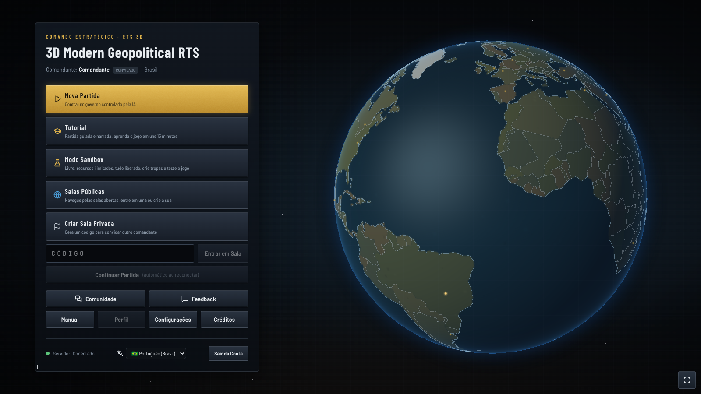
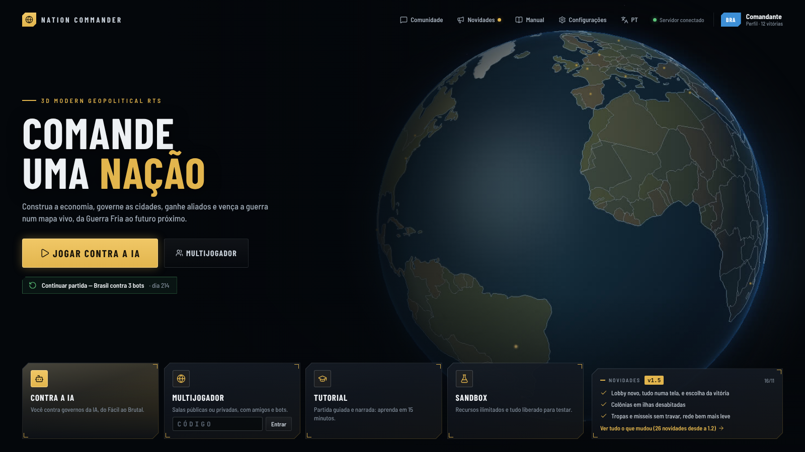

Menu inicial — antes e depois (mesma tela de 1600 × 900)
Hoje

- Nove botões do mesmo tamanho empilhados: jogar, tutorial, sandbox, salas e código competem pela atenção.
- O globo fica de lado, sem ligação com o resto; as novidades ficam escondidas em Feedback.
Proposta

- Uma ação principal: "Jogar contra a IA" em destaque, Multijogador ao lado; "Continuar partida" só aparece quando há uma.
- Modos em cartões embaixo (Contra a IA, Multijogador com o código da sala, Tutorial, Sandbox).
- Novidades à vista com a versão e o link para tudo o que mudou; Comunidade, Manual, Configurações, idioma, servidor e perfil numa barra discreta em cima.
- O globo vira o cenário da tela inteira, com o título grande por cima.